library("QFeatures")
library("dplyr")
library("tidyr")
library("ggplot2")
library("msqrob2")
library("stringr")
library("ExploreModelMatrix")
library("MsCoreUtils")
library("matrixStats")
library("patchwork")
library("kableExtra")
library("ComplexHeatmap")
library("purrr")
library("tibble")
library("scater")Tutorial: Rapamycin
1 Background
This data is a subset of the data from (Van Leene et al. 2026), where a limited Limited Proteolysis (LiP) Treatment was conducted with rapamicin. The treatment consists of either 10 μM rapamycin (Sigma-Aldrich) in 0.1% dimethyl sulfoxide (DMSO; Sigma-Aldrich) or 0.1% DMSO as vehicle control.
Analyse the data to prioritise proteins that are DA between rapamicin and control. Use either the DIA-NN or spectronaut output.
2 Load packages
We load the msqrob2 package, along with additional packages for data manipulation and visualisation.
3 Data
3.1 Precursor table
We load the output from DIA-NN parquet file. Can be file path to local file or url to file that lives on the web.
precursorFile = "https://github.com/statOmics/PDA-DIA/raw/refs/heads/main/data/rapamicin-diann.parquet"We can import the report.parquet file using the read_parquet function from the arrow package. Note, that older versions of DIA-NN store the output as report.tsv.
precursors <- arrow::read_parquet(precursorFile) # function from the arrow package
#precursors <- data.table::fread(precursorFile) # For older versions of DIA-NN, where the results are stored as tsv files. Note that the precursorFile then would point to "report.tsv" Each row in the precursor data table is in “long format” and contains information about one precursor in a specific run (the table below shows the first 6 rows). The columns contains various descriptors about the precursor, such as its sequence, its charge, run, etc. Some of these columns contain the quantification values, e.g. Ms1.Area, Precursor.Quantity etc.
| Run.Index | Run | Channel | Precursor.Id | Modified.Sequence | Stripped.Sequence | Precursor.Charge | Precursor.Lib.Index | Decoy | Proteotypic | Precursor.Mz | Protein.Ids | Protein.Group | Protein.Names | Genes | RT | iRT | Predicted.RT | Predicted.iRT | IM | iIM | Predicted.IM | Predicted.iIM | Precursor.Quantity | Precursor.Normalised | Ms1.Area | Ms1.Normalised | Ms1.Apex.Area | Ms1.Apex.Mz.Delta | Normalisation.Factor | Quantity.Quality | Empirical.Quality | Normalisation.Noise | Ms1.Profile.Corr | Evidence | Mass.Evidence | Channel.Evidence | Ms1.Total.Signal.Before | Ms1.Total.Signal.After | RT.Start | RT.Stop | FWHM | PG.TopN | PG.MaxLFQ | Genes.TopN | Genes.MaxLFQ | Genes.MaxLFQ.Unique | PG.MaxLFQ.Quality | Genes.MaxLFQ.Quality | Genes.MaxLFQ.Unique.Quality | Q.Value | PEP | Global.Q.Value | Lib.Q.Value | Peptidoform.Q.Value | Global.Peptidoform.Q.Value | Lib.Peptidoform.Q.Value | PTM.Site.Confidence | Site.Occupancy.Probabilities | Protein.Sites | Lib.PTM.Site.Confidence | Translated.Q.Value | Channel.Q.Value | PG.Q.Value | PG.PEP | GG.Q.Value | Protein.Q.Value | Global.PG.Q.Value | Lib.PG.Q.Value | Best.Fr.Mz | Best.Fr.Mz.Delta |
|---|---|---|---|---|---|---|---|---|---|---|---|---|---|---|---|---|---|---|---|---|---|---|---|---|---|---|---|---|---|---|---|---|---|---|---|---|---|---|---|---|---|---|---|---|---|---|---|---|---|---|---|---|---|---|---|---|---|---|---|---|---|---|---|---|---|---|---|---|---|---|
| 8 | 9_DIA_DMSO_TC_1 | AAAAAAAAAAAAAAAGAGAGAK2 | AAAAAAAAAAAAAAAGAGAGAK | AAAAAAAAAAAAAAAGAGAGAK | 2 | 0 | 0 | 1 | 798.9263 | P55011 | P55011 | S12A2_HUMAN | SLC12A2 | 57.40781 | 40.81963 | 57.49280 | 40.67845 | 0 | 1.070434 | 0 | 0 | 1147166.5 | 852234.2 | 1802758.0 | 1339276 | 1399295.9 | 0.0023193 | 0.7429037 | 0.9318473 | 0.9460074 | -0.0503721 | 0.8901591 | 4.506057 | 2.500666 | 0.8909680 | 1257825536 | 1525005568 | 57.27108 | 57.60994 | 0.1469626 | 0 | 2929389 | 0 | 2929389 | 2929389 | 0.9578860 | 0.9578860 | 0.9578860 | 0.0000017 | 0.0000034 | 1e-06 | 3.3e-06 | 0 | 5e-07 | 2.6e-06 | 1 | AAAAAAAAAAAAAAAGAGAGAK2 | 1 | 0 | 0 | 0.0002157 | 0.0004303 | 0.0002159 | 0.0002206 | 0.0002131 | 0.0002188 | 1028.5483 | -0.0090332 | ||
| 9 | 10_DIA_Rapa_TC_1 | AAAAAAAAAAAAAAAGAGAGAK2 | AAAAAAAAAAAAAAAGAGAGAK | AAAAAAAAAAAAAAAGAGAGAK | 2 | 0 | 0 | 1 | 798.9263 | P55011 | P55011 | S12A2_HUMAN | SLC12A2 | 57.36258 | 40.81963 | 57.40662 | 40.69133 | 0 | 1.070434 | 0 | 0 | 1346250.2 | 964981.9 | 1961195.6 | 1405770 | 1156866.8 | 0.0014038 | 0.7167924 | 0.9412389 | 0.9590527 | -0.0627911 | 0.8263984 | 5.506520 | 2.713051 | 0.8778678 | 1147834112 | 1869577856 | 57.22586 | 57.56458 | 0.1501184 | 0 | 2894337 | 0 | 2894337 | 2894337 | 0.9609898 | 0.9609898 | 0.9609898 | 0.0000018 | 0.0000018 | 1e-06 | 3.3e-06 | 0 | 5e-07 | 2.6e-06 | 1 | AAAAAAAAAAAAAAAGAGAGAK2 | 1 | 0 | 0 | 0.0002155 | 0.0006329 | 0.0002157 | 0.0002205 | 0.0002131 | 0.0002188 | 886.4741 | -0.0031738 | ||
| 10 | 11_DIA_DMSO_TC_2 | AAAAAAAAAAAAAAAGAGAGAK2 | AAAAAAAAAAAAAAAGAGAGAK | AAAAAAAAAAAAAAAGAGAGAK | 2 | 0 | 0 | 1 | 798.9263 | P55011 | P55011 | S12A2_HUMAN | SLC12A2 | 57.56860 | 40.81963 | 57.60924 | 40.71953 | 0 | 1.070434 | 0 | 0 | 893413.2 | 770886.8 | 1333890.1 | 1150955 | 1323796.2 | -0.0003052 | 0.8628558 | 0.9284042 | 0.9175366 | -0.1675937 | 0.9019018 | 4.866691 | 2.660956 | 0.2125769 | 1111571200 | 945193600 | 57.43310 | 57.70553 | 0.1013432 | 0 | 2504442 | 0 | 2504442 | 2504442 | 0.9572172 | 0.9572172 | 0.9572172 | 0.0005044 | 0.0007771 | 1e-06 | 3.3e-06 | 0 | 5e-07 | 2.6e-06 | 1 | AAAAAAAAAAAAAAAGAGAGAK2 | 1 | 0 | 0 | 0.0002166 | 0.0006395 | 0.0002167 | 0.0002216 | 0.0002131 | 0.0002188 | 1028.5483 | 0.0026855 | ||
| 11 | 12_DIA_Rapa_TC_2 | AAAAAAAAAAAAAAAGAGAGAK2 | AAAAAAAAAAAAAAAGAGAGAK | AAAAAAAAAAAAAAAGAGAGAK | 2 | 0 | 0 | 1 | 798.9263 | P55011 | P55011 | S12A2_HUMAN | SLC12A2 | 57.54454 | 40.81963 | 57.58831 | 40.68960 | 0 | 1.070434 | 0 | 0 | 963568.3 | 702102.1 | 1489931.5 | 1085636 | 1486961.1 | 0.0025024 | 0.7286481 | 0.9218206 | 0.9088255 | 0.0103638 | 0.8958665 | 4.081090 | 1.632993 | 0.4082483 | 1187845120 | 938629376 | 57.40922 | 57.68145 | 0.1012173 | 0 | 2624754 | 0 | 2624754 | 2624754 | 0.9586405 | 0.9586405 | 0.9586405 | 0.0004198 | 0.0007183 | 1e-06 | 3.3e-06 | 0 | 5e-07 | 2.6e-06 | 1 | AAAAAAAAAAAAAAAGAGAGAK2 | 1 | 0 | 0 | 0.0002180 | 0.0004309 | 0.0002182 | 0.0002227 | 0.0002131 | 0.0002188 | 957.5112 | -0.0034180 | ||
| 12 | 13_DIA_DMSO_TC_3 | AAAAAAAAAAAAAAAGAGAGAK2 | AAAAAAAAAAAAAAAGAGAGAK | AAAAAAAAAAAAAAAGAGAGAK | 2 | 0 | 0 | 1 | 798.9263 | P55011 | P55011 | S12A2_HUMAN | SLC12A2 | 57.70812 | 40.81963 | 57.70699 | 40.75817 | 0 | 1.070434 | 0 | 0 | 898772.9 | 961509.2 | 992774.4 | 1062072 | 992774.4 | 0.0026245 | 1.0698022 | 0.9329855 | 0.9406688 | -0.0256271 | 0.9143001 | 2.767479 | 1.860568 | 0.8867961 | 1075728384 | 1047771840 | 57.50420 | 57.84513 | 0.1523914 | 0 | 2921798 | 0 | 2921798 | 2921798 | 0.9542071 | 0.9542071 | 0.9542071 | 0.0012113 | 0.0030675 | 1e-06 | 3.3e-06 | 0 | 5e-07 | 2.6e-06 | 1 | AAAAAAAAAAAAAAAGAGAGAK2 | 1 | 0 | 0 | 0.0002199 | 0.0004356 | 0.0002201 | 0.0002253 | 0.0002131 | 0.0002188 | 957.5112 | -0.0046387 | ||
| 13 | 14_DIA_Rapa_TC_3 | AAAAAAAAAAAAAAAGAGAGAK2 | AAAAAAAAAAAAAAAGAGAGAK | AAAAAAAAAAAAAAAGAGAGAK | 2 | 0 | 0 | 1 | 798.9263 | P55011 | P55011 | S12A2_HUMAN | SLC12A2 | 57.54312 | 40.81963 | 57.59985 | 40.68917 | 0 | 1.070434 | 0 | 0 | 1212575.1 | 1069557.5 | 1628423.9 | 1436359 | 1628423.9 | 0.0010376 | 0.8820546 | 0.9354141 | 0.9668877 | -0.0467460 | 0.8974808 | 5.565739 | 2.697229 | 0.7443724 | 1103267840 | 898741440 | 57.40726 | 57.74611 | 0.1122603 | 0 | 3054606 | 0 | 3054606 | 3054606 | 0.9583338 | 0.9583338 | 0.9583338 | 0.0000010 | 0.0000020 | 1e-06 | 3.3e-06 | 0 | 5e-07 | 2.6e-06 | 1 | AAAAAAAAAAAAAAAGAGAGAK2 | 1 | 0 | 0 | 0.0002170 | 0.0004337 | 0.0002172 | 0.0002220 | 0.0002131 | 0.0002188 | 744.3999 | 0.0116577 |
Quick check on distribution of precursors MS2 intensities.
precursors |>
ggplot(aes(x = log2(Precursor.Quantity))) +
geom_density() +
theme_minimal()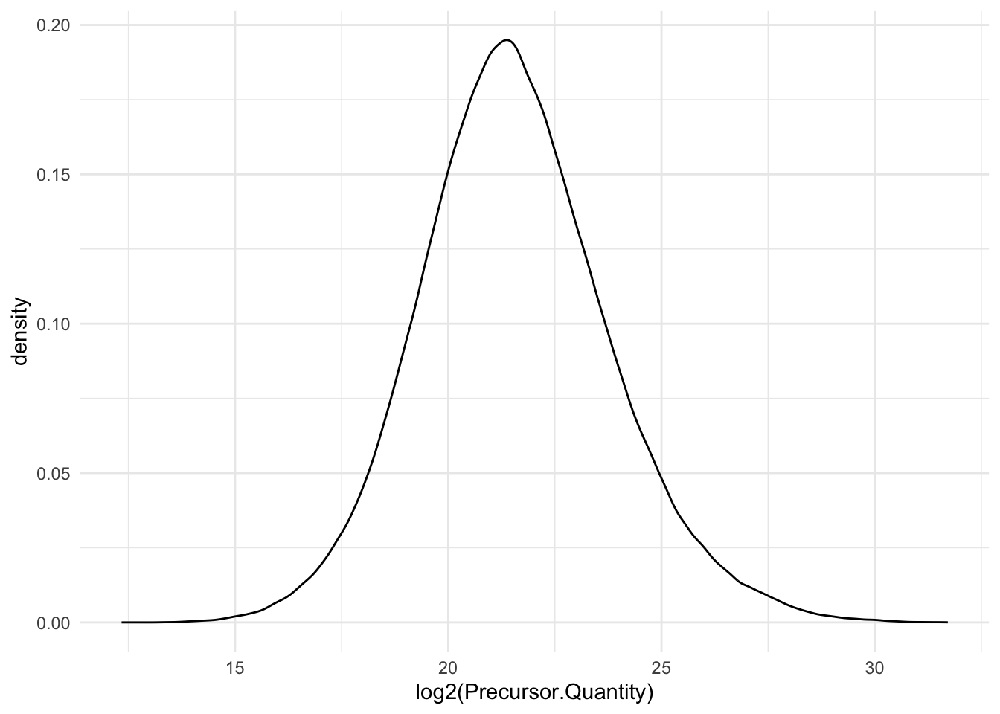
We filter the data to reduce the memory footprint.
precursors <- precursors |>
select(
Run,
Precursor.Id,
Modified.Sequence,
Stripped.Sequence,
Precursor.Charge,
Protein.Group,
Protein.Names,
Protein.Ids,
Genes,
Precursor.Quantity,
Precursor.Normalised,
Normalisation.Factor,
Ms1.Area,
Ms1.Normalised,
PG.MaxLFQ,
Q.Value,
Lib.Q.Value,
PG.Q.Value,
Lib.PG.Q.Value,
Proteotypic,
Decoy, # Not available in older versions of DIA-NN
RT)3.2 Sample annotation table
The sample annotation table) is not available and can be generated from the run labels, as the researchers included information on the design in the filenames.
annot <- data.frame(runCol = precursors |>
pull(Run) |>
unique() # 1.
) |>
mutate(sampleId =
str_split(runCol, pattern = "DIA_") |> #2.b
sapply(`[`, 2) |> #2.c
gsub(pattern = "TC_", replacement = "")
) |>
mutate(
condition = sampleId |> #3.a
str_split("_") |> #3.b
sapply(`[`, 1) |> #3.c
as.factor(), #3.e
rep = sampleId |>
str_split("_") |> #4.a
sapply(`[`, 2) |> #4.b
replace_na(replace = "1") |> #4.c
as.factor() #4.d
)3.3 Convert to QFeatures
First, recall that the precursor table is file in long format. Every quantitative column in the precursor table contains information for multiple runs. Therefore, the function split the table based on the run identifier, given by the runCol argument (for DIA-NN, that identifier is contained in run). So, the QFeatures object after import will contain as many sets as there are runs. Next, the function links the annotation table with the PSM data. To achieve this, the annotation table must contain a runCol column that provides the run identifier in which each sample has been acquired, and this information will be used to match the identifiers in the Run column of the precursor table.
Here, we will use the Precursor.Quantity column as quantification input.
Note, that we filter a number of variables to reduce the footprint of the QFeatures object.
(qf <- readQFeatures(assayData = precursors,
colData = annot,
quantCols = "Precursor.Quantity",
runCol = "Run",
fnames = "Precursor.Id"))An instance of class QFeatures (type: bulk) with 8 sets:
[1] 10_DIA_Rapa_TC_1: SummarizedExperiment with 61504 rows and 1 columns
[2] 11_DIA_DMSO_TC_2: SummarizedExperiment with 60678 rows and 1 columns
[3] 12_DIA_Rapa_TC_2: SummarizedExperiment with 61152 rows and 1 columns
...
[6] 15_DIA_DMSO_TC_4: SummarizedExperiment with 61805 rows and 1 columns
[7] 16_DIA_Rapa_TC_4: SummarizedExperiment with 60968 rows and 1 columns
[8] 9_DIA_DMSO_TC_1: SummarizedExperiment with 61525 rows and 1 columns 4 Data preprocessing
The data preprocessing workflow for DIA data is similar to the workflow for DDA-LFQ data, but there are suble differences as we start from precursor level data and have additional columns.
4.1 Encoding missing values
We first replace any zero in the quantitative data with an NA.
qf <- zeroIsNA(qf, names(qf))Note that msqrob2 can handle missing data without having to rely on hard-to-verify imputation assumptions, which is our general recommendation. However, msqrob2 does not prevent users from using imputation, which can be performed with impute() from the QFeatures package.
4.2 Precursor Filtering
Filtering removes low-quality and unreliable precursors that would otherwise introduce noise and artefacts in the data.
4.2.1 Remove questionable identifications
We apply standard filtering advised by DIA-NN:
q-value threshold of 0.01 for the identification of precursors (
Q.Value) and protein groups (PG.Q.Value). If the file is processed via matching between runs, it is also useful to filter on Lib.Q.Value and Lib.PG.Q.Value.Remove precursors that could not be mapped, i.e. when
Precursor.Idcolumn is an empty string.Filter decoys, i.e. only keep precursors for which the
Decoycolumn equals 0. (Note, that theDecoycolumn is not present in the output of older versions of DIA-NN)Keeping only proteotypic peptides, which map uniquely to a specific protein.
qf <- qf |>
filterFeatures(~ Q.Value <= 0.01 & #1.
PG.Q.Value <= 0.01 & #1.
Lib.Q.Value <= 0.01 & #1.
Lib.PG.Q.Value <= 0.01 & #1.
Precursor.Id != "" & #2.
Decoy == 0 & #3. (Note, that this filter is not available with previous versions of DIA-NN, as the report.tsv file did not include a Decoy column. So other strategies are needed if Decoys are in the output file.)
Proteotypic == 1) #4.Note, that it is important that the filtering criteria are not distorting the distribution of the test statistics in the downstream analysis for features that are non-DA. It can be shown that filtering will not induce bias results when the filtering criterion is independent of test statistic. The criteria that we proposed above are all based on the results of the identification step, hence, they are independent of the downstream test statistics that will be used to prioritize DA proteins.
4.2.2 Assay joining
Up to now, the data from different runs were kept in separate assays. We can now join the normalised sets into an precursor set using joinAssays(). Sets are joined by stacking the columns (samples) in a matrix and rows (features) are matched according to a row identifier, here the Precursor.Id. We will store the result in the assay with name: precursor.
(qf <- joinAssays(
x = qf,
i = names(qf),
fcol = "Precursor.Id",
name = "precursors"
))An instance of class QFeatures (type: bulk) with 9 sets:
[1] 10_DIA_Rapa_TC_1: SummarizedExperiment with 57096 rows and 1 columns
[2] 11_DIA_DMSO_TC_2: SummarizedExperiment with 56348 rows and 1 columns
[3] 12_DIA_Rapa_TC_2: SummarizedExperiment with 56806 rows and 1 columns
...
[7] 16_DIA_Rapa_TC_4: SummarizedExperiment with 56638 rows and 1 columns
[8] 9_DIA_DMSO_TC_1: SummarizedExperiment with 57133 rows and 1 columns
[9] precursors: SummarizedExperiment with 60946 rows and 8 columns 4.2.3 Filtering: Remove highly missing precursors
We keep peptides that were observed at last 4 times out of the \(n = 8\) samples, so that we can estimate the peptide characteristics. We tolerate the following proportion of NAs: \(\text{pNA} = \frac{(n - 4)}{n} = 0.5\), so we keep peptides that are observed in at least 50% of the samples, which roughly corresponds to 2 samples per condition. This is an arbitrary value that may need to be adjusted depending on the experiment and the data set.
nObs <- 4
n <- ncol(qf[["precursors"]])
(qf <- filterNA(qf, i = "precursors", pNA = (n - nObs) / n))An instance of class QFeatures (type: bulk) with 9 sets:
[1] 10_DIA_Rapa_TC_1: SummarizedExperiment with 57096 rows and 1 columns
[2] 11_DIA_DMSO_TC_2: SummarizedExperiment with 56348 rows and 1 columns
[3] 12_DIA_Rapa_TC_2: SummarizedExperiment with 56806 rows and 1 columns
...
[7] 16_DIA_Rapa_TC_4: SummarizedExperiment with 56638 rows and 1 columns
[8] 9_DIA_DMSO_TC_1: SummarizedExperiment with 57133 rows and 1 columns
[9] precursors: SummarizedExperiment with 58482 rows and 8 columns 4.2.4 Filter one-hit wonders
Here, we remove proteins that can only be found by one peptide, as such proteins may not be trustworthy.
We first calculate how many distinct peptides map to each protein (
Protein.Group). We use the stripped precursor sequence, i.e. sequence of the base peptide for this purpose.We store this information in the row data of the precursors assay
We filter precursors of one-hit wonder proteins.
# Filter for peptides per protein
pepsPerProtDf <- qf[["precursors"]] |>
rowData() |>
data.frame() |>
dplyr::select("Stripped.Sequence", "Protein.Group") |>
group_by(Protein.Group) |>
mutate(pepsPerProt = Stripped.Sequence |>
unique() |> length()
) #1.
rowData(qf[["precursors"]])$pepsPerProt <- pepsPerProtDf$pepsPerProt #2.
qf <- filterFeatures(qf,
~ pepsPerProt > 1,
keep = TRUE) #3.4.3 Log-transformation
We perform log2-transformation with logTransform() from the QFeatures package. We use base = 2 and store the result in a new summarized experiment named precursors_log
qf <- logTransform(qf,
base = 2,
i = "precursors",
name = "precursors_log")4.4 Normalisation
The most common objective of MS-based proteomics experiments is to understand the biological changes in protein abundance between experimental conditions. However, changes in measurements between groups can be caused due to technical factors. For instance, there are systematic fluctuations from run-to-run that shift the measured intensity distribution. We can this explore as follows:
- We extract the sets containing the log transformed data. This is performed using
QFeatures’ 3-way subsetting. - We use
longForm()to convert theQFeaturesobject into a long table, includingconditionandconcentrationfor filtering and colouring. - We visualise the density of the quantitative values within each sample. We colour each sample based on its spike-in condition.
qf[, , "precursors_log"] |> #1.
longForm(colvars = colnames(colData(qf))) |> #2.
data.frame() |>
filter(!is.na(value)) |>
ggplot() + #3.
aes(x = value,
colour = condition,
group = colname) +
geom_density() +
theme_minimal()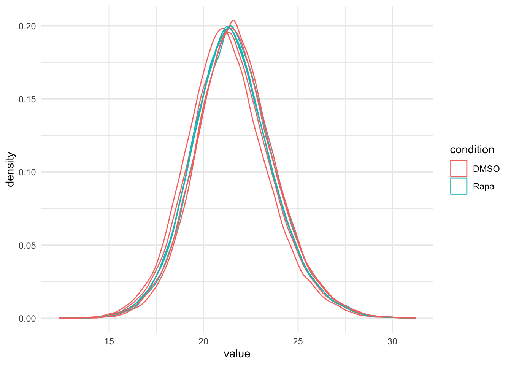
There are many ways to perform the normalisation, e.g. median centering is a popular choice. If we subtract the sample median at the log scale from each precursor log2 intensity, this basically boils down to calculating log-ratio’s between the precursor intensity and its sample median. Here, we choose to work with offsets, these are chosen in such a way so that the distributions are centered around the location of a reference sample. E.g. the median of the sample medians. We can do that with the nf_log_med function.
qf <- sweep( #4. Subtract log2 norm factor column-by-column (MARGIN = 2)
qf,
MARGIN = 2,
STATS = nf_log_med(qf,"precursors_log"),
i = "precursors_log",
name = "precursors_norm"
)We explore the effect of the global normalisation in the subsequent plot.
Formally, the function applies the following operation on each sample \(i\) across all precursors \(p\):
\[ y_{ip}^{\text{norm}} = y_{ip} - \log_2(nf_i) \]
with \(y_ip\) the log2-transformed intensities and \(nf_i\) the log2-transformed norm factor. Upon normalisation, we can see that the distribution of the \(y_{ip}^{\text{norm}}\) nicely overlap (using the same code as above)
qf[, , "precursors_norm"] |>
longForm(colvars = colnames(colData(qf))) |>
data.frame() |>
filter(!is.na(value)) |>
ggplot() +
aes(x = value,
colour = condition,
group = colname) +
geom_density() +
labs(subtitle = "Normalised log2 precursor intensities") +
theme_minimal()
4.5 Summarisation
Here, we summarise the precursor-level data into protein intensities using maxLFQ. maxLFQ first calculates all pairwise log ratio’s between samples only using their shared precursors. Particularly, it uses the median of the log ratio’s between the shared precursors s, i.e. \[r_{ij} = median(y_{sj}-y_{si})\].
Hence, it first eliminates peptide effects. It then estimates the summaries by solving
\[
\sum_i\sum_j(y^{prot}_j - y^{prot}_i - r_ij)^2
\] It is implemented in the maxLFQ function of the iq package.
aggregateFeatures() streamlines summarisation. It requires the name of a rowData column to group the precursors into proteins (or protein groups), here Protein.Group. We provide the summarisation approach through the fun argument. Other summarisation methods are available from the MsCoreUtils package, see ?aggregateFeatures for a comprehensive list. The function will return a QFeatures object with a new set that we called proteins.
(qf <- aggregateFeatures(
qf, i = "precursors_norm",
name = "proteins",
fcol = "Protein.Group",
fun = function(X) iq::maxLFQ(X)$estimate
))An instance of class QFeatures (type: bulk) with 12 sets:
[1] 10_DIA_Rapa_TC_1: SummarizedExperiment with 57096 rows and 1 columns
[2] 11_DIA_DMSO_TC_2: SummarizedExperiment with 56348 rows and 1 columns
[3] 12_DIA_Rapa_TC_2: SummarizedExperiment with 56806 rows and 1 columns
...
[10] precursors_log: SummarizedExperiment with 57981 rows and 8 columns
[11] precursors_norm: SummarizedExperiment with 57981 rows and 8 columns
[12] proteins: SummarizedExperiment with 4613 rows and 8 columns 5 Data exploration and QC
Data exploration aims to highlight the main sources of variation in the data prior to data modelling and can pinpoint to outlying or off-behaving samples.
5.1 Marginal distribution at precursor and protein level
qf[, , "precursors_norm"] |>
longForm(colvars = colnames(colData(qf))) |>
data.frame() |>
filter(!is.na(value)) |>
ggplot() +
aes(x = value,
colour = condition,
group = colname) +
geom_density() +
theme_minimal() +
labs(subtitle = "Normalised log2 precursor intensities")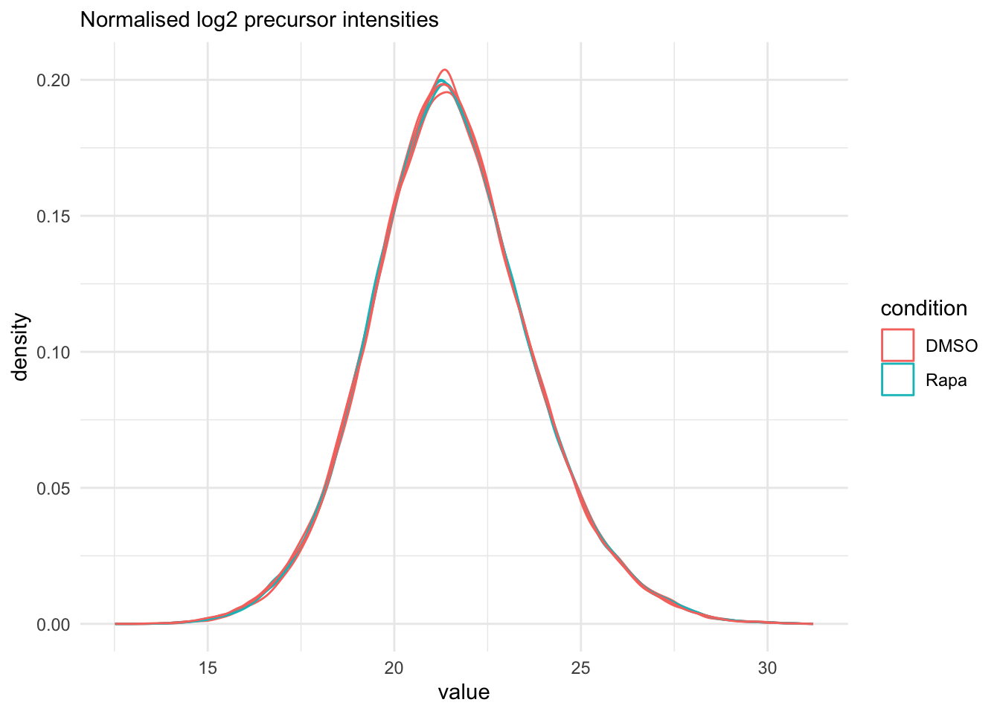
qf[, , "precursors_norm"] |>
longForm(colvars = colnames(colData(qf))) |>
data.frame() |>
filter(!is.na(value)) |>
ggplot() +
aes(x = sampleId,
y = value,
colour = condition,
group = colname) +
xlab("sample") +
geom_boxplot() +
theme_minimal() +
labs(subtitle = "Normalised log2 precursor intensities")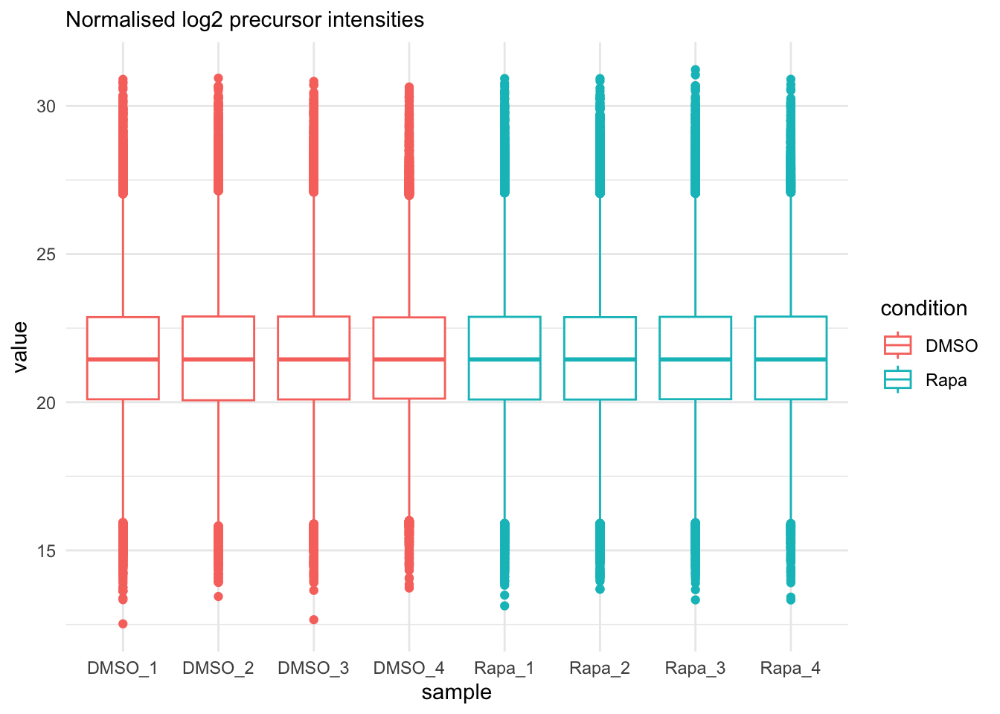
qf[, , "proteins"] |>
longForm(colvars = colnames(colData(qf))) |>
data.frame() |>
filter(!is.na(value)) |>
ggplot() +
aes(x = sampleId,
y = value,
colour = condition,
group = colname) +
xlab("sample") +
geom_boxplot() +
theme_minimal() +
labs(subtitle = "Normalised log2 protein intensities")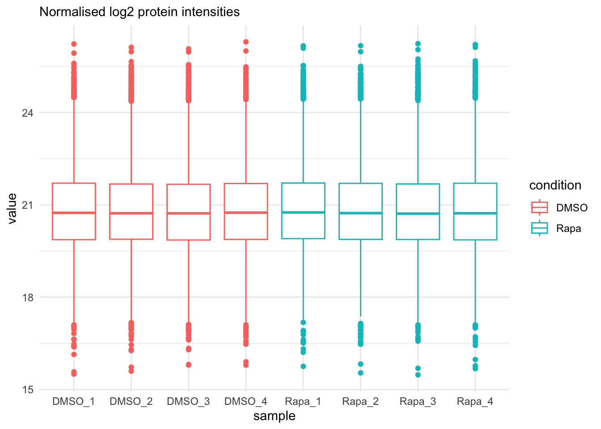
qf[, , "proteins"] |>
longForm(colvars = colnames(colData(qf))) |>
data.frame() |>
filter(!is.na(value)) |>
ggplot() +
aes(x = value,
colour = condition,
group = colname) +
geom_density() +
theme_minimal() +
labs(subtitle = "Normalised log2 protein intensities")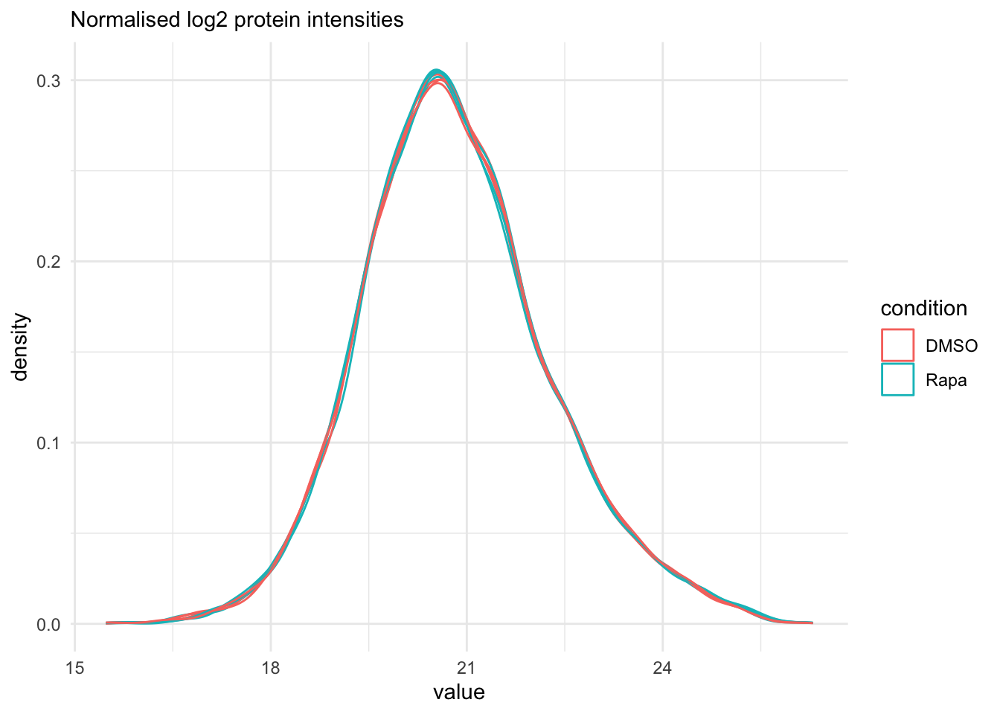
5.2 Charge state
qf[, , "precursors_norm"] |>
longForm(colvars = colnames(colData(qf)), rowvars = "Precursor.Charge") |>
as.data.frame() |>
filter(!is.na(value)) |>
filter(Precursor.Charge<=4) |>
ggplot(aes(x = sampleId)) +
geom_bar(aes(fill = factor(Precursor.Charge, levels = 4:1)),
colour = "black") +
labs(title = "Peptide types per sample",
x = "Sample",
fill = "Charge state") +
theme_bw()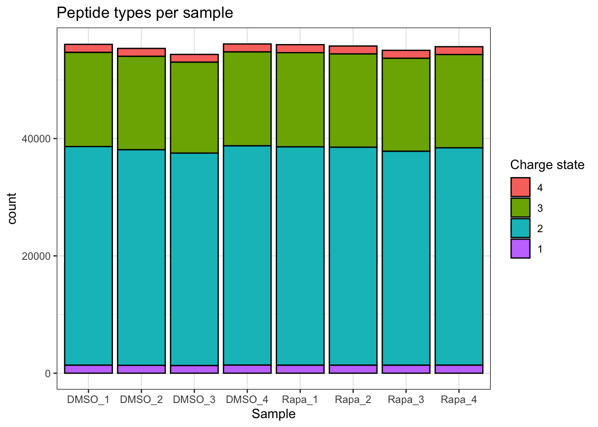
5.3 Identifications per sample
qf[,,"precursors_norm"] |>
longForm(colvars = colnames(colData(qf)),
rowvars= c("Precursor.Id",
"Protein.Group",
"Stripped.Sequence",
"Precursor.Charge")) |>
data.frame() |>
filter(!is.na(value)) |>
mutate(cond_rep = paste0("ratio", condition, "_", rep)) |>
group_by(condition, cond_rep) |>
summarise(Precursors = length(unique(Precursor.Id)),
`Protein Groups` = length(unique(Protein.Group))) |>
pivot_longer(-(1:2),
names_to = "Feature",
values_to = "IDs") |>
ggplot(aes(x = cond_rep, y = IDs, fill = condition)) +
geom_col() +
#scale_fill_observable() +
facet_wrap(~Feature,
scales = "free_y") +
labs(title = "Precursor and protein group identificiations per sample",
x = "Sample",
y = "Identifications") +
theme_bw() +
theme(axis.text.x = element_text(angle = 90))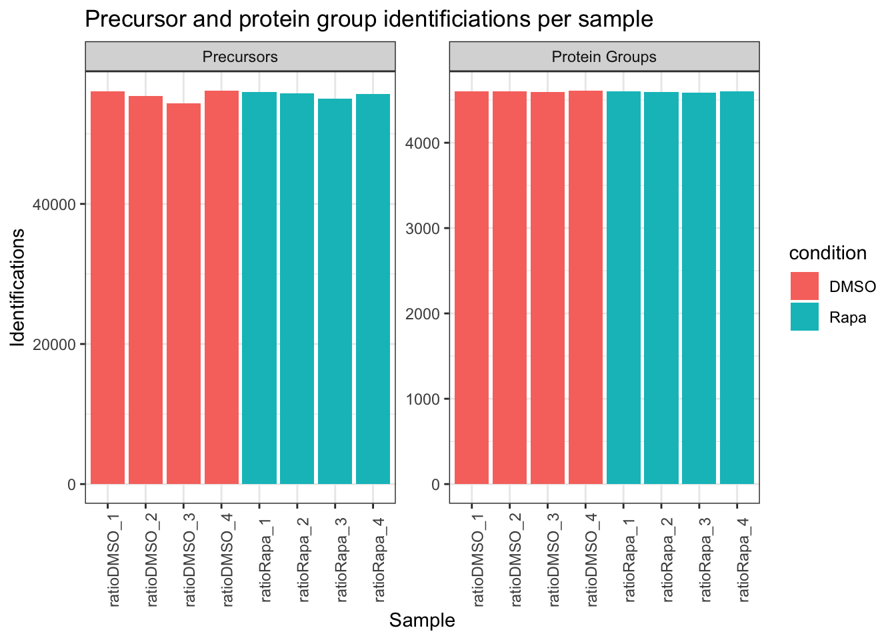
# Data Modeling (Robust Regression){#sec-modelling}5.4 Dimensionality reduction plot
A common approach for data exploration is to perform dimension reduction, such as Multi Dimensional Scaling (MDS). We will first extract the set to explore along the sample annotations (used for plot colouring).
getWithColData(qf, "proteins") |>
as("SingleCellExperiment") |>
runMDS(exprs_values = 1) |>
plotMDS(colour_by = "condition", shape_by = "rep") 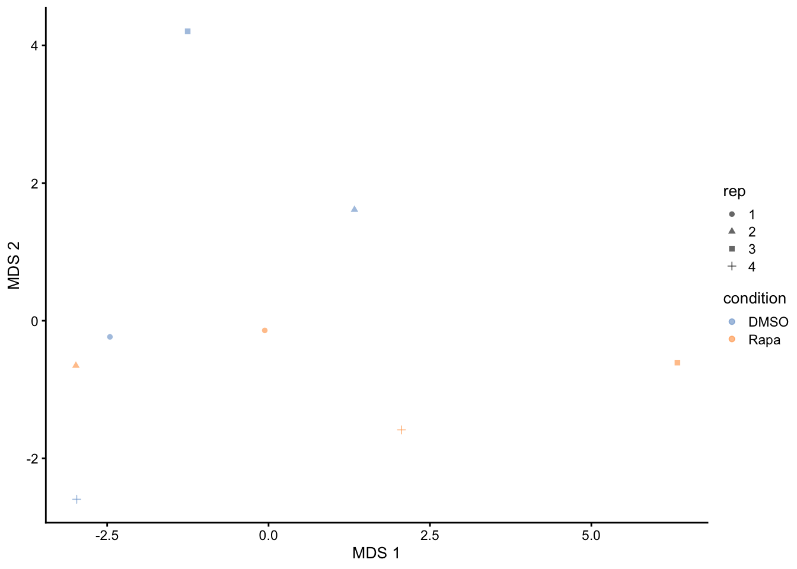
This plot reveals interesting information. First, we see that the samples are nicely separated according to their spike-in condition. Interestingly, the conditions are sorted by the concentration.
5.5 Correlation matrix
corMat <- qf[["proteins"]] |>
assay() |>
cor(method = "spearman", use = "pairwise.complete.obs")
colnames(corMat) <- qf$sampleId
rownames(corMat) <- qf$sampleId
corMat |>
ggcorrplot::ggcorrplot() +
scale_fill_viridis_c() +
labs(title = "Correlation matrix",
fill = "Correlation") +
theme(axis.text.x = element_text(angle = 90))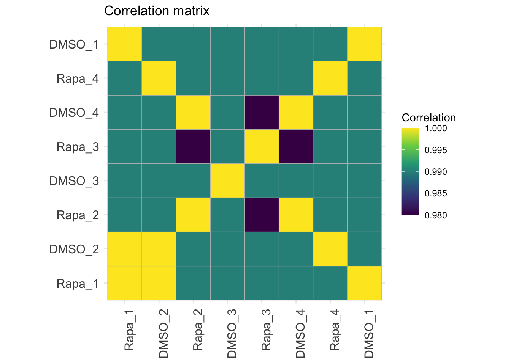
6 Data Modeling (Robust Regression)
6.1 Model estimation
We first define the model. We only have one sources of variability in the experiment that we can model, i.e. the effect of the spike-in condition.
We fit the model to each protein in the
proteinssummarised experiment of the QFeatures objectqfusing the msqrob function.
model <- ~ condition
qf <- msqrob(
qf,
i = "proteins",
formula = model,
robust = TRUE)We enabled M-estimation (robust = TRUE) for improved robustness against outliers.
The fitting results are available in the msqrobModels column of the rowData. More specifically, the modelling output is stored in the rowData as a statModel object, one model per row (protein). We will see in a later section how to perform statistical inference on the estimated parameters.
models <- rowData(qf[["proteins"]])[["msqrobModels"]]
models[1:3]$A0A0U1RRE5
Object of class "StatModel"
The type is "rlm"
There number of elements is 5
$A0AVF1
Object of class "StatModel"
The type is "rlm"
There number of elements is 5
$A0AVT1
Object of class "StatModel"
The type is "rlm"
There number of elements is 5 6.2 Inference
We can now convert the research question “do the spike-in conditions affect the protein intensities?” into a statistical hypothesis.
In other words, we need to translate this question in a null and alternative hypothesis on a single model parameter or a linear combination of model parameters, which is also referred to with a contrast.
To aid defining contrasts, we will visualise the experimental design using the ExploreModelMatrix package.
vd <- ExploreModelMatrix::VisualizeDesign(
sampleData = colData(qf),
designFormula = model,
textSizeFitted = 4
)
vd$plotlist[[1]]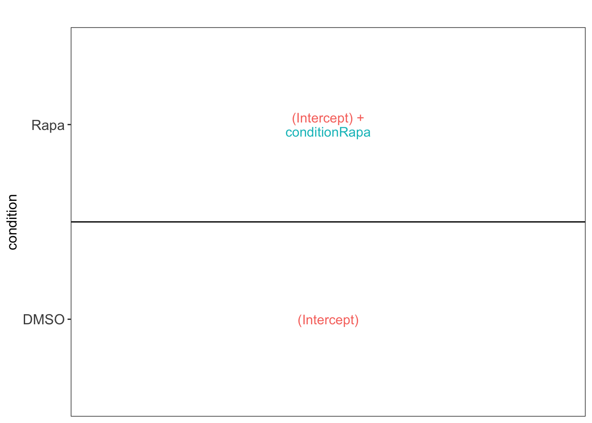
We have a two group comparison and the average log2 fold change between condition 4 and condition 2 can be estimated using parameter:
\[ \log_2 \widehat{\text{FC}}^{4-2} = \hat\mu^4 - \hat\mu^2 = ((Intercept) + condition4) - (Intercept) = condition4 \] So we can assess the null hypothesis that a protein is not differentially abundant between spike-in condition 4 and spike-in condition 2 as follows \[ H_0 \log_2 \widehat{\text{FC}}^{4-2} = 0 \text{ or } condition4 = 0 \] Below we define the contrast and construct the corresponding contrast matrix.
contrast <- "conditionRapa = 0"
(L <- makeContrast(
contrast,
parameterNames = colnames(vd$designmatrix)
)) conditionRapa
(Intercept) 0
conditionRapa 1We assess the contrast for each protein.
qf <- hypothesisTest(qf, i = "proteins", contrast = L)We extract the results table from the proteins summarised experiment in the qf object.
inference <-
msqrobCollect(qf[["proteins"]], L)6.3 Report results
We report the results using a results table, volcano plots and heatmaps.
6.3.1 Results table
We report all results that are significant at the nominal FDR level of 5%.
- We define the nominal FDR level
- We filter the results
- We arrange them according to statistical significance
alpha <- 0.05
inference |>
filter(adjPval < alpha) |>
arrange(pval) |>
knitr::kable()| logFC | se | df | t | pval | adjPval | contrast | feature |
|---|
We observe that the results only contain spiked UPS proteins.
6.3.2 Volcanoplots
volcanoplot <- plot_volcano(inference)
volcanoplot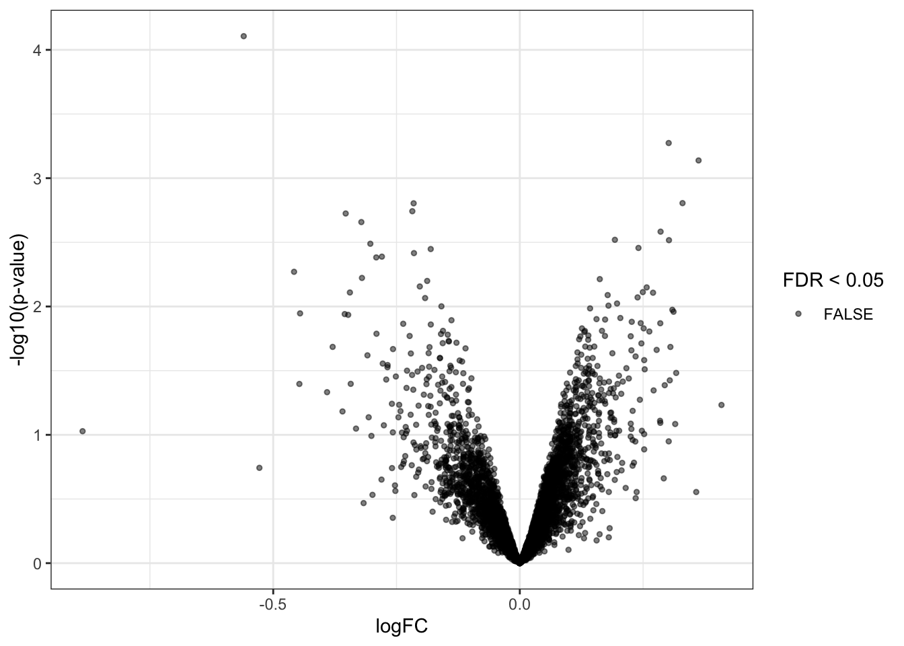
Note, that the log fold changes are nicely around the real log2 fold change: \(log2(4/2) = 1\)
6.3.3 Heatmaps
We make the heatmap as follows
We select the names of the proteins that were declared significant between condition A and condition B and extract their quantitative data.
We extract the quantitative data with
assay()and scale by rows.We will create a heatmap using the ComplexHeatmap package, which enables heatmap annotations. We will annotate the heatmap using our model variables condition and lab.
We make the heatmap
sig <- inference |>
filter(adjPval < alpha) |>
arrange(pval) |>
pull(feature) #1.
se <- getWithColData(qf, "proteins")
quants <- t(scale(t(assay(se[sig,])))) #2.
colnames(quants) <- paste0("con", se$condition,"_rep",se$rep) #specific to this dataset to get short colnames
annotations <- columnAnnotation(
condition = se$condition
) #3.
set.seed(1234) ## annotation colours are randomly generated by default
heatmap <- Heatmap(
quants,
name = "log2 intensity",
top_annotation = annotations,
column_title = paste0(contrast, " = 0")
) #4.
heatmap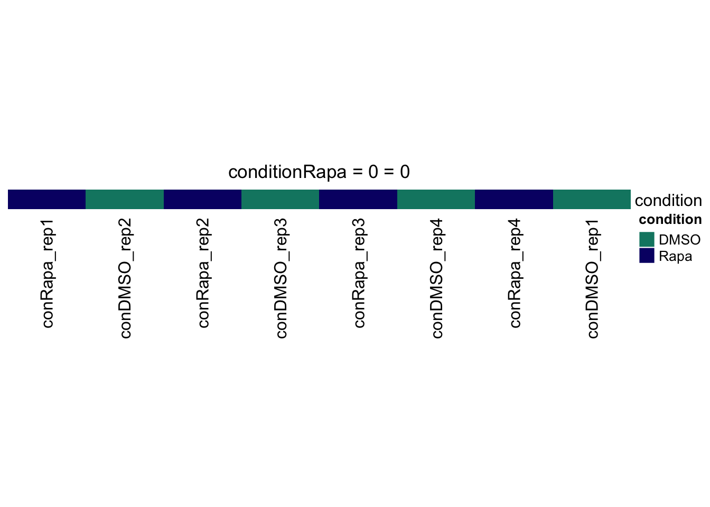
6.3.4 Detail plots
We can explore the data for a protein to validate the statistical inference results. For example, let’s explore the normalised precursor and the summarised protein intensities for the protein with the most significant log2 fold change.
(targetProtein <- inference |>
dplyr::slice(which.min(pval)) |>
pull(feature)
)[1] "Q9HBF4"To obtain the required data, we perform a little data manipulation pipeline:
We use the QFeatures subsetting functionality to retrieve all data related to and focusing on the peptides_log and proteins sets that contains the peptide ion data used for model fitting. We then convert the data with longForm() for plotting. Finally, we plot the log2 normalised intensities for each sample at the protein and at the peptide level. Since multiple peptides are recorded for the protein, we link peptides across samples using a grey line. Samples are colored according to E. coli spike-in condition.
qf[targetProtein, , c("precursors_norm", "proteins")] |> #1
longForm(colvars = colnames(colData(qf))) |> #2
data.frame() |>
ggplot() +
aes(x = colname,
y = value) +
geom_line(aes(group = rowname), linewidth = 0.1) +
geom_point(aes(colour = condition)) +
facet_wrap(~ assay, scales = "free") +
ggtitle(targetProtein) +
theme_minimal() +
theme(axis.text.x = element_blank())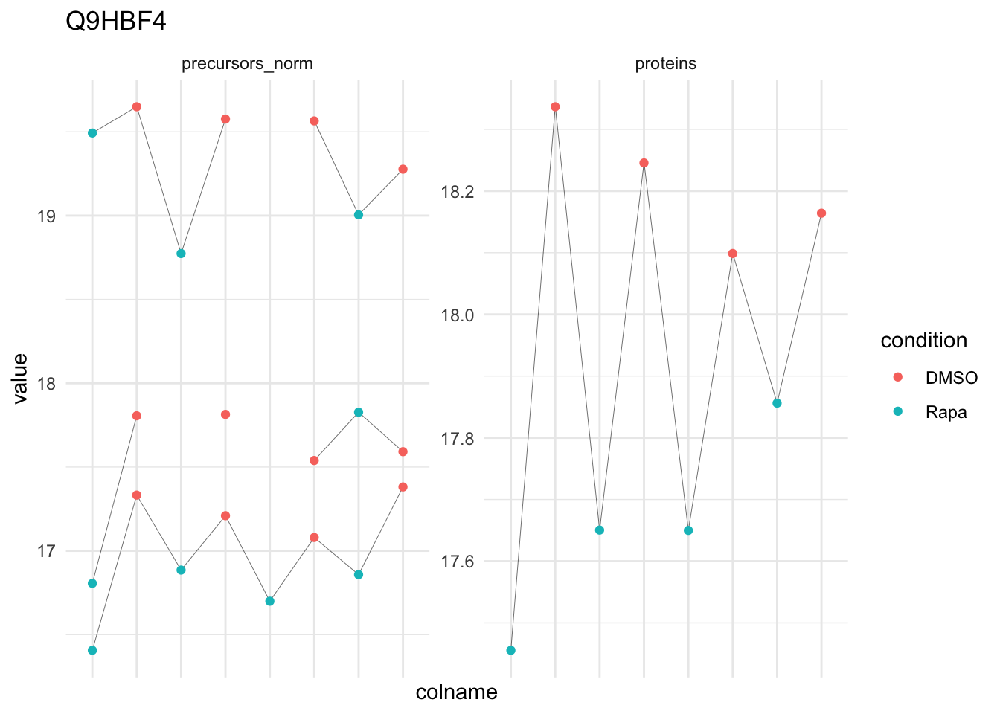
qf[targetProtein, , c("precursors_norm", "proteins")] |> #1
longForm(colvars = colnames(colData(qf))) |> #2
data.frame() %>%
{
ggplot(.) +
aes(x = condition,
y = value) +
geom_boxplot(aes(colour = condition)) +
facet_wrap(~ assay, scales = "free") +
geom_jitter(aes(shape = rowname)) +
scale_shape_manual(values = seq_len(dplyr::n_distinct(.$rowname))) +
ggtitle(targetProtein) +
theme_minimal() +
theme(axis.text.x = element_blank()) +
guides(shape = "none")
}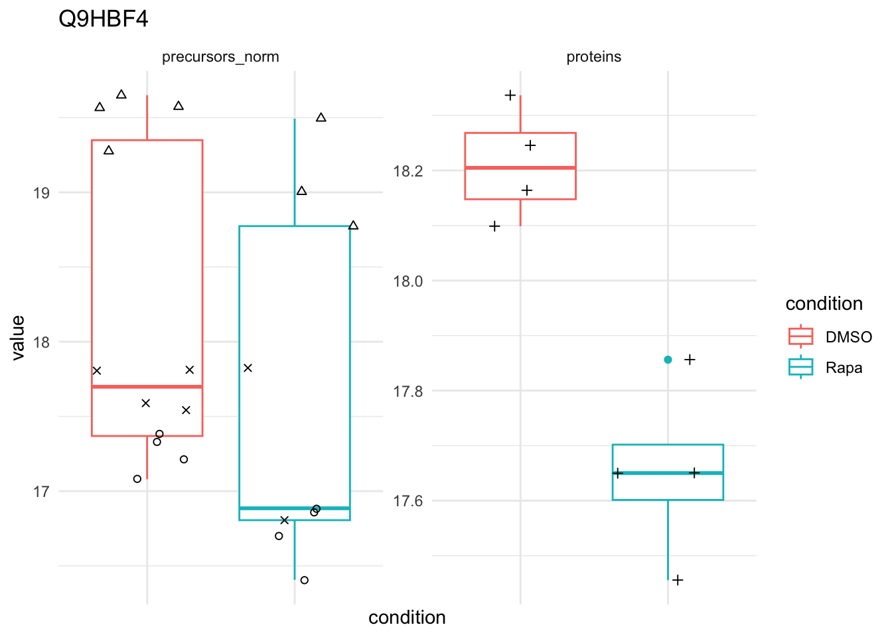
References
Van Leene, Chloé, Emin Araftpoor, An Staes, Andrea Argentini, Marcel Bühler, Lieven Clement, and Kris Gevaert. 2026. “Advancing DIA-Based Limited Proteolysis Workflows: Introducing DIA-LiPA.” Analytical Chemistry 98 (7): 5499–5512. https://doi.org/10.1021/acs.analchem.5c07014.